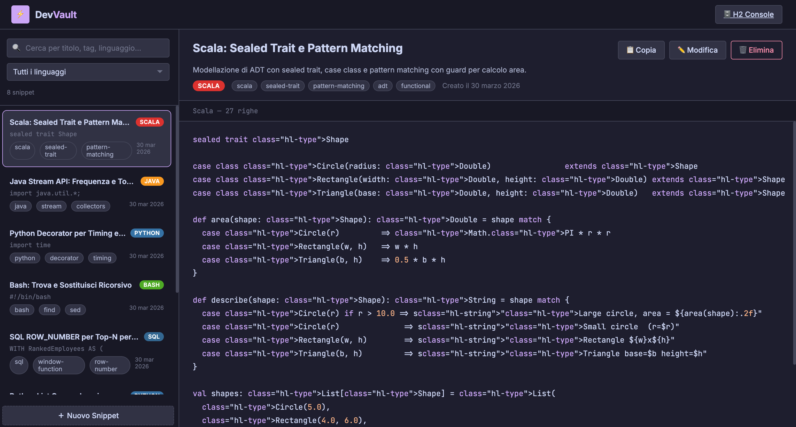
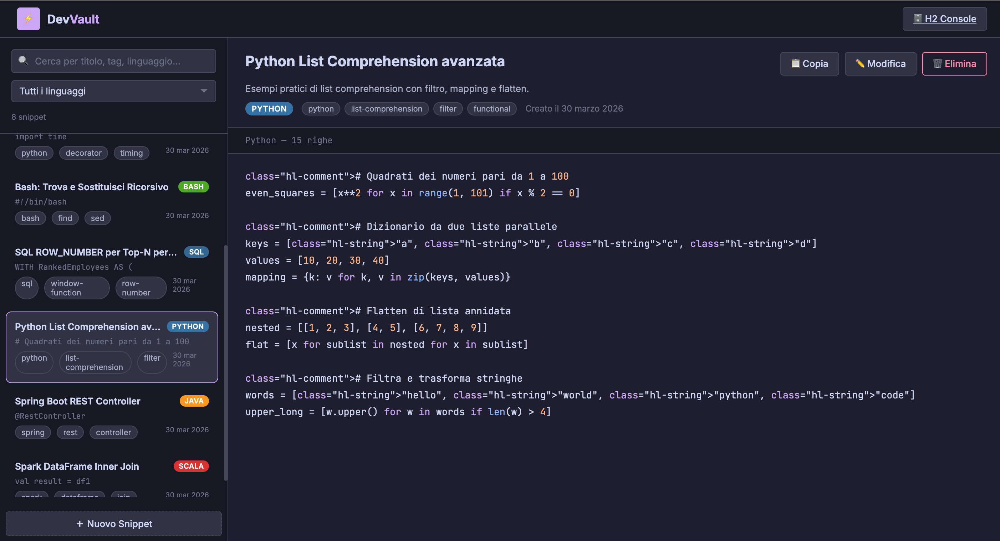
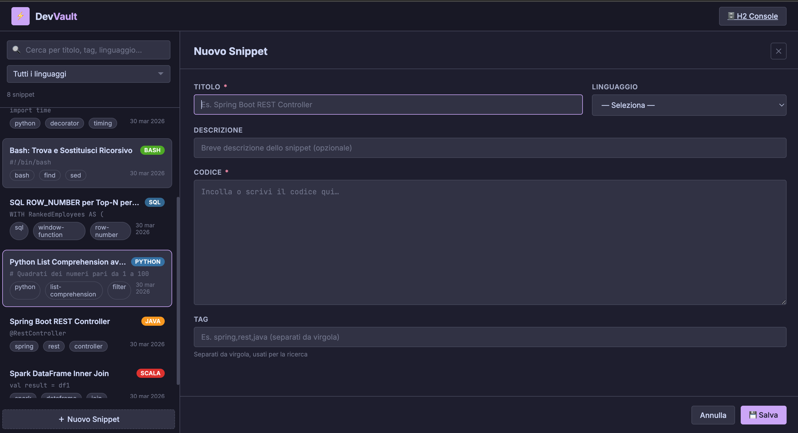
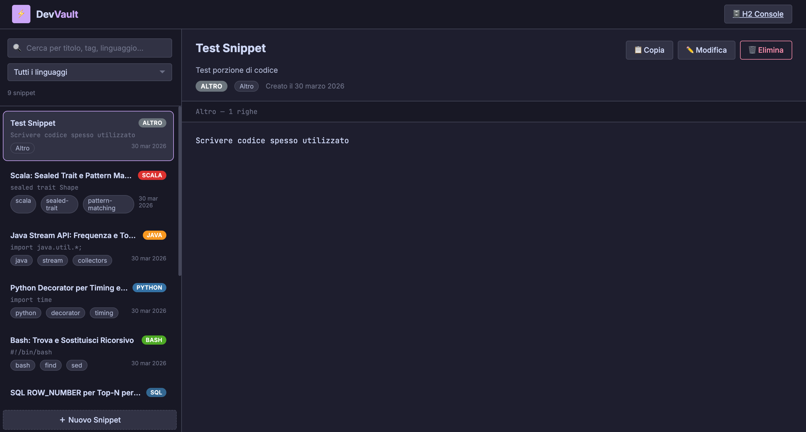

// progetto personale · Java
DevVault
Java 17
Spring Boot 3
H2
JPA
REST API
Gestore di snippet di codice con API REST completa, costruito con Java 17 e Spring Boot 3. Permette di salvare, cercare e organizzare frammenti di codice per linguaggio e tag, con un'interfaccia stile IDE con syntax highlighting. Il database H2 in-memory semplifica il deploy locale senza configurazioni esterne.
Funzionalità principali
- API REST completa — endpoint CRUD per snippet:
GET /snippets,POST,PUT,DELETE - Ricerca full-text per tag e linguaggio di programmazione — filtri combinabili
- Syntax highlighting nell'interfaccia — evidenziazione della sintassi per i linguaggi più comuni
- JPA / Hibernate per il mapping ORM — entità, repository e query JPQL
- H2 in-memory database — nessun setup esterno, ideale per sviluppo e demo
- Validazione degli input lato server con Bean Validation (Jakarta)
Stack tecnico
- Java 17 — linguaggio principale, con utilizzo di record, sealed classes e nuove API
- Spring Boot 3 — framework per il layer web, dependency injection, configurazione automatica
- Spring Data JPA — accesso ai dati tramite repository pattern, query derivate dal nome del metodo
- H2 Database — database relazionale in-memory per sviluppo locale e testing
- Maven — gestione delle dipendenze e build lifecycle
Screenshot

// lista snippet — filtro per linguaggio e tag

// dettaglio snippet — syntax highlighting inline

// form creazione snippet — selezione linguaggio e tag

// ricerca full-text — risultati filtrati per tag

// risposta API REST — payload JSON strutturato